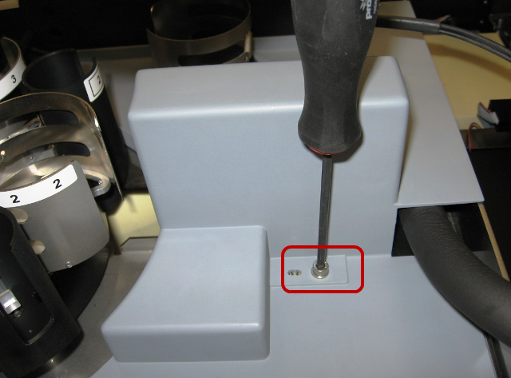
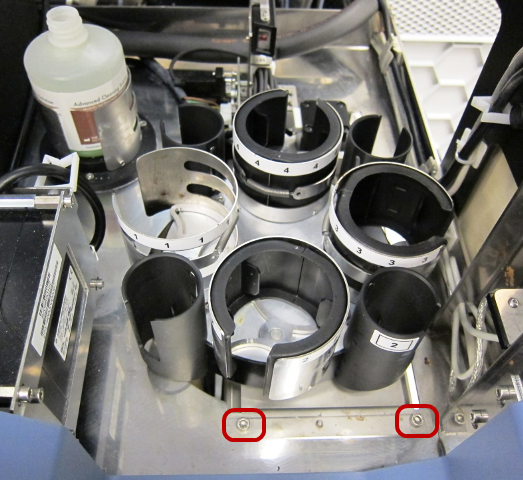
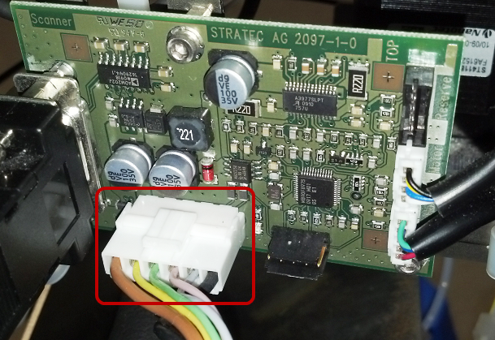
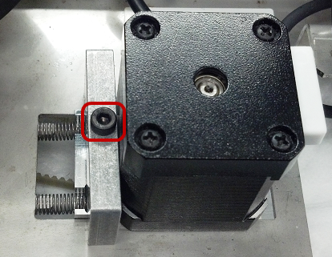
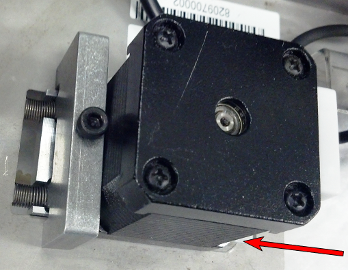
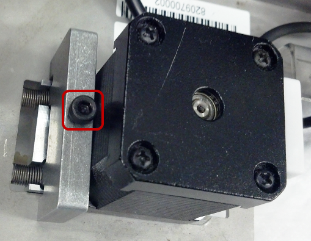
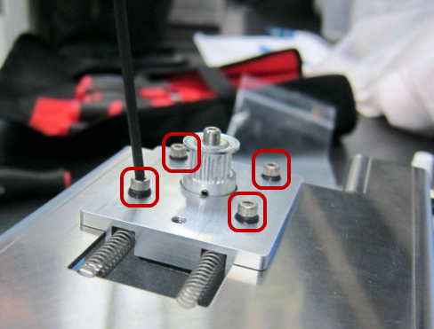
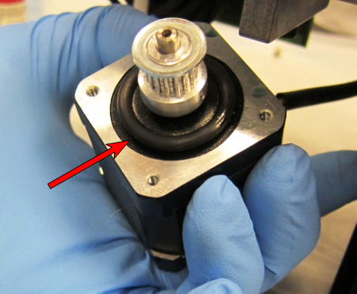
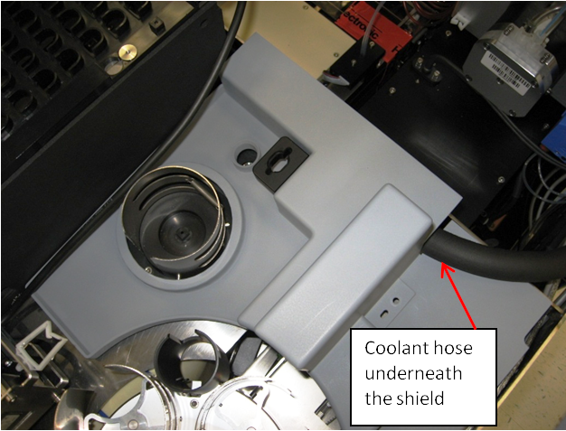
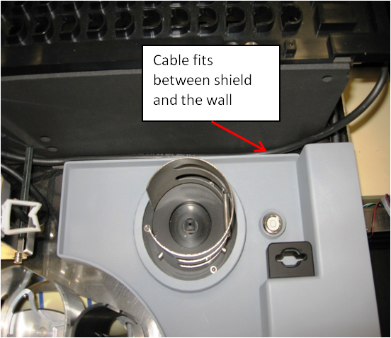

Parts and Materials Required
- Set of metric Allen wrenches
- Loctite 290
- TCR
 Target capture reagent—An assay-specific reagent added as part of specimen pipetting. Mixer Motor
Target capture reagent—An assay-specific reagent added as part of specimen pipetting. Mixer Motor
Time Required
- 1 hour
Removal Procedure
- Power down the Panther System.
- Open the right side system panel.
- If the TCR mixer drip shield is installed, remove it by removing the screw that secures it and lifting the cover out of the system.

- Remove the two screws that secure the TCR mixer module.

- Gently lift the module to gain access to the TCR mixer power cable and unplug the cable.

- Remove the module from the system and place it on a workbench covered with an absorbent pad.
- Loosen, but do not remove, the motor mount clamp screw.

- Push the motor mount assembly forward to relieve tension on the TCR motor belt. With the motor mount pushed forward, tighten the motor mount clamp screw.


- Turn the TCR mixer upside down. Remove the TCR mixer belt and set it aside.
- Disconnect the TCR motor cable from the PCB.
- Note the orientation of the motor. The new motor must be installed in the same orientation.
- Remove and retain the four motor mounting screws and o-rings holding the motor in place.

- Remove and retain the large O-ring for re-use with the replacement motor.

- Discard the faulty TCR motor according to laboratory guidelines.
Replacement Procedure
- Place the large O-ring on the replacement TCR mixer motor.
- Apply Loctite 242 to the motor mount screws before re-installing the motor.
- Paying attention to the orientation of the motor, feed the new motor through the mount bracket and secure it using the four mounting screws and small O-rings.
- Connect the TCR motor cable to the PCB.
- Fully tighten the four mounting screws and then back them off by one full turn.
- Re-install the TCR drive belt. Loosen the motor mount clamp screw, allow the belt to self-tension, and re-tighten the motor mount clamp screw.
- Plug the power cable into the control PCB and re-install the TCR mixer module. Verify the power cable does not interfere with the TCR mixer movement.
- Re-install the TCR mixer drip shield and route the coolant hose underneath the shield. Ensure that the Reagent Bay barcode scanner cable fits between the TCR mixer drip shield and the Sample Bay.


- Remove the Luminometer injectors and open the Mid Bay drawer to the fully extended position.
- Using Service Software, initialize the TCR mixer and <Start> the mixer rotating.
- If necessary, use a 2.5 mm Allen wrench to adjust the four motor screws by ± ¼ turns to reduce the motor noise level. More detailed information on this procedure can be found in GP11-277-FSN.
- Push the Mid Bay drawer back in and lock it in place.
- Reconnect the Luminometer injectors to the Luminometer.
- Close the system side panels.
- Reteach the Sample Pipettor to the TCR mixer.
Verification
- Power on the Panther System.
- In Service Software, initiate the TCR mixer. Start the TCR mixer rotating. Allow the mixer to operator for one minute and then stop the mixer.
- Verify the mixer is able to initialize without error. Verify the mixer does not have any step-loss errors when mixing.
 button at the top of the page to send feedback, comments, or change requests.
button at the top of the page to send feedback, comments, or change requests.